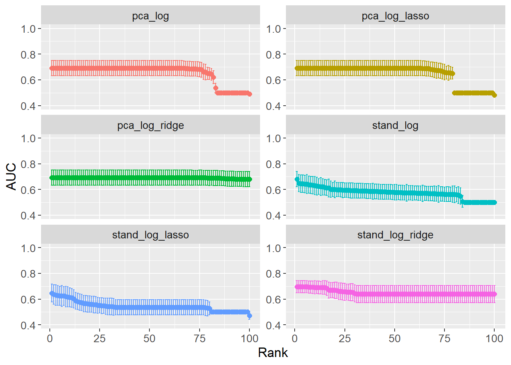
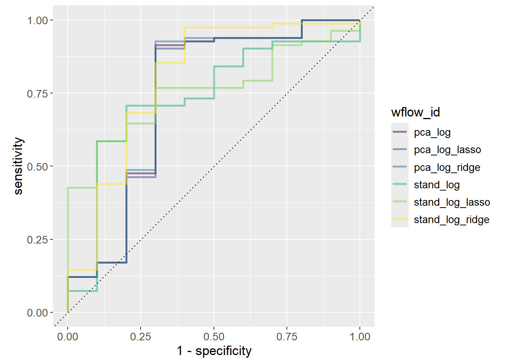
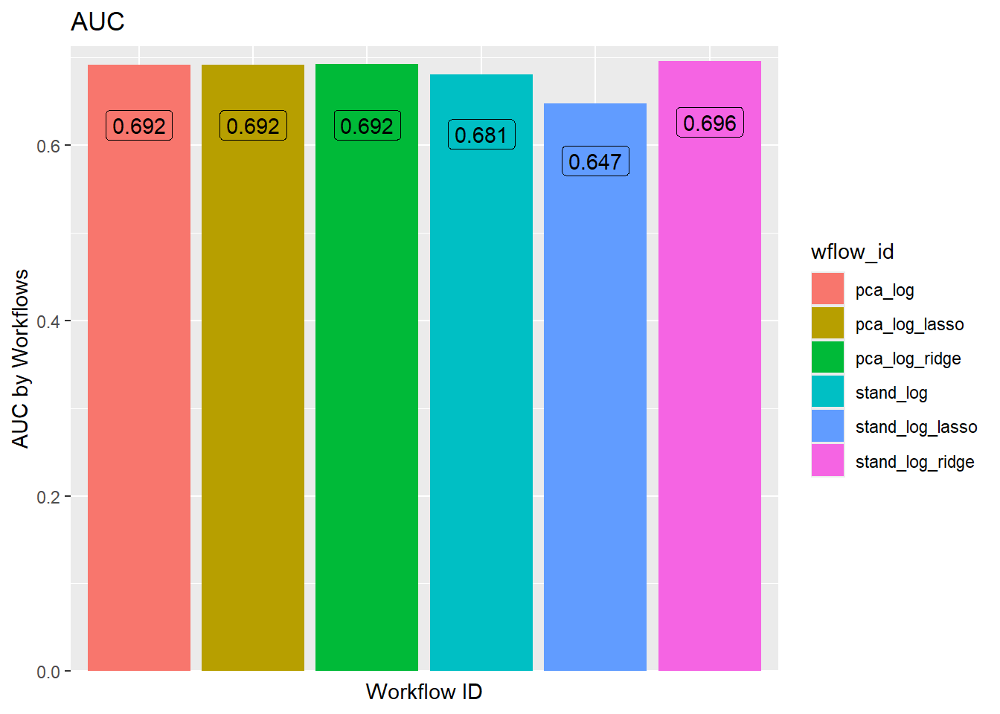
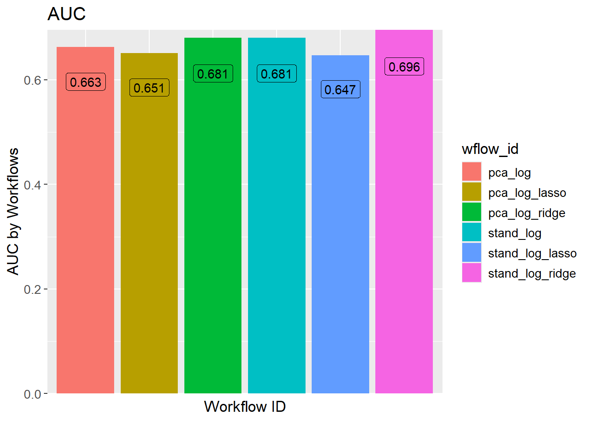

Show the code
set.seed(1337)
library("tidymodels")
tidymodels::tidymodels_prefer()
library("vegan")
library("embed")Set seed and load packages.
set.seed(1337)
library("tidymodels")
tidymodels::tidymodels_prefer()
library("vegan")
library("embed")Load data.
count_matrix_clr <- readr::read_rds("https://github.com/WilliamH-R/BioStatistics/raw/main/data/count_matrix/count_matrix_clr.rds") |>
select(-"NA")
meta <- read.csv(file = "data/metadata.txt") |>
as_tibble() |>
select(Run, chem_administration, ETHNICITY, geo_loc_name,
Host_age, host_body_mass_index, Host_disease, host_phenotype, host_sex) |>
rename(Sample = Run,
Treatment = chem_administration,
Ethnicity = ETHNICITY,
Location = geo_loc_name,
Age = Host_age,
BMI = host_body_mass_index,
Disease_severity = Host_disease,
EDSS = host_phenotype,
Sex = host_sex) |>
mutate(Patient_status = case_when(Disease_severity == "1HealthyControl" ~ "Healthy",
TRUE ~ "MS"),
EDSS = as.factor(EDSS),
EDSS = case_when(is.na(EDSS) & Disease_severity == "1HealthyControl" ~ "-1",
is.na(EDSS) & Disease_severity != "1HealthyControl" ~ "Unknown",
TRUE ~ EDSS),
EDSS = as.factor(EDSS))Chosen parameters.
params$percentage_train
[1] 0.8
$n_folds
[1] 10
$grid_size
[1] 100
$penalty_lower
[1] -10
$penalty_higher
[1] 1Logistic Regression is a linear model since the decision boundary is linear. Linear models tend to be faster due to the less complex math, and are thereby also better for scalability (large data sets). Further, linear models are easier to interpret, as the coefficients can be directly interpreted as the effect of the feature on the response. Linear models also contain some built in regularization as they cannot memorize the data set which can help avoiding overfitting.
The issues with linear models occur when the data do not contain linear relationships, in which case the model will not be able to capture the underlying structure.
In this chapter, different logistic regression models are built to predict the disease status of individuals. The models are built using different preprocessing steps and different hyperparameter combinations.
The data is joined with the metadata as the Patient_status is used as the response. Only the columns that are needed for the model are kept. Notice inner_join() is used such that only rows for which both the count matrix and metadata are available are kept.
count_matrix_clr <- count_matrix_clr |>
inner_join(meta,
by = "Sample") |>
select(-c(Sample, Treatment, Ethnicity, Location,
Age, BMI, Disease_severity, EDSS, Sex)) |>
relocate(Patient_status)The data is split into a training and testing set using cross-validation to avoid overfitting. This is especially needed as hyperparameters are to be tuned.
The data is split:
count_matrix_clr_split <- initial_split(count_matrix_clr,
prop = params$percentage_train,
strata = Patient_status)
count_matrix_clr_train <- training(count_matrix_clr_split)
count_matrix_clr_test <- testing(count_matrix_clr_split)The CV object is created:
count_matrix_clr_folds <- vfold_cv(count_matrix_clr_train,
v = params$n_folds)The recipes contains two pieces of important information. The first is the formula that describes the relationship between the features and the response. In this case, which genera to use for predicting disease. The second is the pre-processing steps that are applied to the data before the model is built. This could include steps such as scaling, log-transform or imputing missing values. Here, the data is already clr-transformed.
Two recipes are created. One without any pre-processing steps and one where PCA is applied for dimensionality reduction. In both cases, all features are used to try and predict the response Patient_status.
stand_recipe <- recipe(Patient_status ~ .,
data = count_matrix_clr_train)
pca_recipe <- stand_recipe |>
step_pca(all_predictors(),
num_comp = 7)To model the data, a specification is needed. This includes the model to use, the engine to use, mode of prediction and choosing hyperparameters. Since the response is binary, a logistic regression model is used. The model is later tuned using a grid search over the hyperparameters penalty and mixture. Models with exclusively Ridge and Lasso regularization are built, as well as a model with a mixture of both.
log_spec <- logistic_reg(penalty = tune(),
mixture = tune()) |>
set_engine("glmnet") |>
set_mode("classification")
log_ridge_spec <- logistic_reg(penalty = tune(),
mixture = 0) |>
set_engine("glmnet") |>
set_mode("classification")
log_lasso_spec <- logistic_reg(penalty = tune(),
mixture = 1) |>
set_engine("glmnet") |>
set_mode("classification")The hyperparameters penalty and mixture are extracted from the model specification to see the possible values that can be used in the grid search.
For the mixture, values between \(0.05\) and \(1\) is used which seem to be reasonable values.
log_spec |>
extract_parameter_set_dials() |>
extract_parameter_dials("mixture")Proportion of Lasso Penalty (quantitative)
Range: [0.05, 1]For the penalty, values between \(10^{-10}\) and \(1\) are used per default. The range is increased to \(5\cdot10^1\). The updated range is saved in a new object, but the information is not added to the models until the workflow is created further down. As seen from the output, the information do not pertain to a specific model, but simply contain ranges for different hyperparameters.
log_param_ranges <- log_spec |>
extract_parameter_set_dials() |>
update(penalty = penalty(c(params$penalty_lower,
params$penalty_higher)))
log_penalty_param_ranges <- log_lasso_spec |>
extract_parameter_set_dials() |>
update(penalty = penalty(c(params$penalty_lower,
params$penalty_higher)))
log_param_rangesCollection of 2 parameters for tuning
identifier type object
penalty penalty nparam[+]
mixture mixture nparam[+]log_penalty_param_rangesCollection of 1 parameters for tuning
identifier type object
penalty penalty nparam[+]The recipes are combined with the model specifications to create a workflow set. The workflow set is used to fit the models to the data and evaluate the models. Notice it is called a workflow set, as it contains multiple workflows. Each row of the workflow set is a workflow of its own which further contain the recipe and model.
A workflow set for all combinations of recipes and models is created:
workflow_set <- workflow_set(
preproc = list(stand = stand_recipe,
pca = pca_recipe#,
#umap = umap_recipe
),
models = list(log = log_spec,
log_ridge = log_ridge_spec,
log_lasso = log_lasso_spec)
)
workflow_set# A workflow set/tibble: 6 × 4
wflow_id info option result
<chr> <list> <list> <list>
1 stand_log <tibble [1 × 4]> <opts[0]> <list [0]>
2 stand_log_ridge <tibble [1 × 4]> <opts[0]> <list [0]>
3 stand_log_lasso <tibble [1 × 4]> <opts[0]> <list [0]>
4 pca_log <tibble [1 × 4]> <opts[0]> <list [0]>
5 pca_log_ridge <tibble [1 × 4]> <opts[0]> <list [0]>
6 pca_log_lasso <tibble [1 × 4]> <opts[0]> <list [0]>The parameter objects which contain the hyperparameter ranges are added to the workflow (note the option column is changed):
workflow_set <- workflow_set |>
option_add(id = "stand_log",
param_info = log_param_ranges) |>
option_add(id = "pca_log",
param_info = log_param_ranges) |>
option_add(id = "stand_log_ridge",
param_info = log_penalty_param_ranges) |>
option_add(id = "stand_log_lasso",
param_info = log_penalty_param_ranges) |>
option_add(id = "pca_log_ridge",
param_info = log_penalty_param_ranges) |>
option_add(id = "pca_log_lasso",
param_info = log_penalty_param_ranges)
workflow_set# A workflow set/tibble: 6 × 4
wflow_id info option result
<chr> <list> <list> <list>
1 stand_log <tibble [1 × 4]> <opts[1]> <list [0]>
2 stand_log_ridge <tibble [1 × 4]> <opts[1]> <list [0]>
3 stand_log_lasso <tibble [1 × 4]> <opts[1]> <list [0]>
4 pca_log <tibble [1 × 4]> <opts[1]> <list [0]>
5 pca_log_ridge <tibble [1 × 4]> <opts[1]> <list [0]>
6 pca_log_lasso <tibble [1 × 4]> <opts[1]> <list [0]>All workflows in the workflow set contains hyperparameters. These are tuned with a search grid using the function tune_grid(). As workflow_set contain multiple workflows, the tune_grid() function can be mapped over the workflows to tune all hyperparameters using workflow_map(), a purrr-like map function.
Several settings for tuning the grid exists. This includes e.g. whether or not to parallelize, what output to save and how verbose the output should be, i.e. how much should be printed to std.out. The settings are set to:
grid_settings <-
control_grid(
save_pred = TRUE,
parallel_over = "everything",
save_workflow = TRUE,
extract = function(x) x
)The grid search is performed for a grid of size 100, which means 100 different combinations of the hyperparameters are tried for each model.
grid_results <- workflow_set |>
workflow_map(
fn = "tune_grid",
seed = 1337,
resamples = count_matrix_clr_folds,
grid = params$grid_size,
control = grid_settings
)tidymodels comes with a lot of convenience functions. One of these is autoplot() that can, among other things, plot the results of the grid search. The best result of each workflow is selected based on the AUC.
autoplot(
grid_results,
rank_metric = "roc_auc",
metric = "roc_auc",
type = "wflow_id"
) +
geom_point(aes(y = mean)) +
lims(y = c(0.4, 1)) +
theme(legend.position = "none") +
facet_wrap(~ wflow_id,
ncol = 2) +
lims(y = c(0.5, 1))Scale for y is already present.
Adding another scale for y, which will replace the existing scale.Warning: Removed 3 rows containing missing values or values outside the scale range
(`geom_point()`).
Removed 3 rows containing missing values or values outside the scale range
(`geom_point()`).
The issue with wrappers, e.g. the convenience function autoplot(), is that they do not always provide the flexibility needed. A cleaner plot is created by extracting the data and manually plotting it. The plot shows the AUC for each workflow, with error bars showing the standard error.
grid_results |>
collect_metrics() |>
filter(.metric == "roc_auc") |>
group_by(wflow_id) |>
arrange(desc(mean)) |>
mutate(rank = row_number()) |>
ungroup() |>
ggplot(aes(x = rank,
y = mean,
col = wflow_id)) +
geom_point() +
geom_errorbar(aes(ymin = mean - std_err,
ymax = mean + std_err)) +
theme(legend.position = "none") +
labs(x = "Rank",
y = "AUC") +
facet_wrap(~ wflow_id,
ncol = 2,
scales = "free_y")
A couple of interesting insights can be gained from looking at the optimal hyperparameters (see table below). When comparing the two ENet models (stand_log vs pca_log), the mixture is higher for pca_log, i.e. preferring Lasso over Ridge. This is opposite expectations as PCA should reduce the number of features, which in turn should reduce the need for Lasso regularization. However, penalty is several orders of magnitude lower for pca_log meaning the Lasso regularization is less strict. When comparing the full Ridge and Lasso models between the two preprocessing steps, the penalty is lower when PCA preprocessing is performed. This is expected as PCA reduces the number of features reducing the need for regularization.
workflow_ids <- grid_results |>
pull(wflow_id)
tuning_params_result <- workflow_ids |>
purrr::map(function(id) {
grid_results |>
extract_workflow_set_result(id) |>
select_best(metric = "roc_auc") |>
mutate(wflow_id = id)
}) |>
bind_rows() |>
mutate(mixture = case_when(stringr::str_detect(string = wflow_id,
pattern = "lasso") ~ 1,
stringr::str_detect(string = wflow_id,
pattern = "ridge") ~ 0,
TRUE ~ mixture)) |>
select(wflow_id, penalty, mixture)
tuning_params_result# A tibble: 6 × 3
wflow_id penalty mixture
<chr> <dbl> <dbl>
1 stand_log 1.24e- 1 0.0869
2 stand_log_ridge 2.72e+ 0 0
3 stand_log_lasso 4.08e- 2 1
4 pca_log 2.24e- 6 0.356
5 pca_log_ridge 1.26e-10 0
6 pca_log_lasso 1.26e-10 1 As the hyperparameters have been tuned, the final workflow can be created which is done by adding the hyperparameters to the workflow.
workflow_set_final <- workflow_ids |>
purrr::map(function(id) {
grid_results |>
extract_workflow(id) |>
finalize_workflow(tuning_params_result |>
filter(wflow_id == id))
})
names(workflow_set_final) <- workflow_idsTo exemplify, the pca_log workflow is shown from before finalizing and after finalizing. As can be seen, the hyperparameters are added to the workflow such that they have a value instead of tune().
# Before finalizing
grid_results |>
extract_workflow("pca_log")══ Workflow ════════════════════════════════════════════════════════════════════
Preprocessor: Recipe
Model: logistic_reg()
── Preprocessor ────────────────────────────────────────────────────────────────
1 Recipe Step
• step_pca()
── Model ───────────────────────────────────────────────────────────────────────
Logistic Regression Model Specification (classification)
Main Arguments:
penalty = tune()
mixture = tune()
Computational engine: glmnet # After finalizing
workflow_set_final$pca_log══ Workflow ════════════════════════════════════════════════════════════════════
Preprocessor: Recipe
Model: logistic_reg()
── Preprocessor ────────────────────────────────────────────────────────────────
1 Recipe Step
• step_pca()
── Model ───────────────────────────────────────────────────────────────────────
Logistic Regression Model Specification (classification)
Main Arguments:
penalty = 2.24450165395719e-06
mixture = 0.35620289735531
Computational engine: glmnet With the hyperparameters set, the workflows can be fitted to the data, and the models can be evaluated. The last_fit() function is used to fit the model to the data. The split argument is set to the cross-validation object created earlier fitting to the entire training data.
workflow_set_fit <- workflow_ids |>
purrr::map(function(id) {
workflow_set_final[[id]] |>
last_fit(split = count_matrix_clr_split)
})
names(workflow_set_fit) <- workflow_idsDifferent options exist for visualizing the performance of the models. One option is to look at the confusion matrices. The example below shows the confusion matrix for the stand_log model. From the table it can be seen that the model always predict MS, regardless of the true status.
workflow_set_fit$stand_log |>
collect_predictions()|>
conf_mat(truth = Patient_status,
estimate = .pred_class) Truth
Prediction Healthy MS
Healthy 0 0
MS 10 82Another more visual approach is to plot the ROC-curve for each model. First, the specificity and sensitivity is calculated for each model with a convenience function roc_curve():
roc_auc_results <- workflow_ids |>
map(function(id) {
workflow_set_fit[[id]] |>
collect_predictions() |>
roc_curve(truth = Patient_status,
.pred_MS,
event_level = "second") |>
mutate(wflow_id = id)
}) |> bind_rows()
roc_auc_results# A tibble: 564 × 4
.threshold specificity sensitivity wflow_id
<dbl> <dbl> <dbl> <chr>
1 -Inf 0 1 stand_log
2 0.707 0 1 stand_log
3 0.771 0 0.988 stand_log
4 0.778 0 0.976 stand_log
5 0.797 0 0.963 stand_log
6 0.801 0 0.951 stand_log
7 0.803 0 0.939 stand_log
8 0.813 0 0.927 stand_log
9 0.824 0.1 0.927 stand_log
10 0.832 0.2 0.927 stand_log
# ℹ 554 more rowsFinally, the ROC-curve is plotted stratified by the workflow ID. The ROC-curve is a plot of the sensitivity against 1 - specificity. Sensitivity is the proportion of true positives out of all positives, i.e. true positive rate. In this case, the proportion of correctly classified MS patients out of all MS patients. Specificity is the proportion of true negatives out of all negatives. In this case, the proportion of correctly classified healthy patients out of all healthy patients. Since the x-axis plots 1 - specificity, it is rather the proportion of false positives out of all negatives, i.e. the false positive rate (also called false discovery rate).
Determining the best model given the ROC-curve is not trivial as it depends on how many false positives one is willing to accept. If the model is to decide on a risky treatment, one might want to avoid false positives at all costs, e.g. a threshold of 0.01, which would choose stand_log_lasso as it has the highest sensitivity at that threshold. Increasing the threshold to 0.25 would instead choose stand_log.
roc_auc_results |>
ggplot(aes(x = 1 - specificity,
y = sensitivity,
col = wflow_id)) +
geom_path(lwd = 1,
alpha = 0.5) +
geom_abline(lty = 3) +
coord_equal() +
scale_color_viridis_d()
Otherwise, the general rule is to choose the model with the highest AUC since it is the model that performs best across all thresholds. stand_log_ridge performs slightly better than the other models.
workflow_ids |>
purrr::map(function(id) {
grid_results |>
extract_workflow_set_result(id) |>
show_best(metric = "roc_auc",
n = 1) |>
mutate(wflow_id = id)
}) |>
bind_rows() |>
ggplot(aes(x = wflow_id,
y = mean,
fill = wflow_id)) +
geom_col() +
geom_label(aes(label = round(mean, 3)),
position = position_stack(vjust = 0.9),
show.legend = FALSE) +
labs(title = "AUC",
x = "Workflow ID",
y = "AUC by Workflows") +
theme(axis.text.x = element_blank(),
axis.ticks.x = element_blank())
The hyperparameters were tuned using a grid search of size 100. The best result of each workflow is chosen solely on the best value of AUC. It is possible, that a slightly worse performing model is preferred due to it being simpler. Models with a larger penalty are simpler as the coefficients are closer to zero, or less coefficients are present. A “one standard error rule” can be used to choose the simplest model that is within one standard error of the best model.
# All results
ridge_results <- grid_results |>
extract_workflow_set_result("stand_log_ridge") |>
show_best(metric = "roc_auc",
n = params$grid_size)
# Numerically best
n_best <- ridge_results |>
filter(mean == max(mean)) |>
filter(penalty == min(penalty))
# 1-std error rule best
one_std_err_best <- grid_results |>
extract_workflow_set_result("stand_log_ridge") |>
select_by_one_std_err(p = desc(penalty),
metric = "roc_auc") |>
left_join(ridge_results |>
select(.config,
mean),
by = ".config")
ridge_results |>
ggplot(aes(x = penalty,
y = mean)) +
geom_point(aes(col = "Data Points")) +
geom_point(aes(col = "Numerical Best"),
data = n_best) +
geom_point(aes(col = "One std err Best"),
data = one_std_err_best) +
geom_errorbar(aes(ymin = mean - std_err,
ymax = mean + std_err),
col = "steelblue") +
scale_x_log10() +
scale_color_manual(values = c("Data Points" = "steelblue",
"Numerical Best" = "red",
"One std err Best" = "green")) +
labs(title = "Standard Preprocessing, Ridge",
x = "Penalty",
y = "AUC") +
lims(y = c(0, 0.75))The practice is applied to all the models by extracting, finalizing, fitting, predicting and then visualizing as done in the above.
# Extract hyperparameters
tuning_params_result_fine <- workflow_ids |>
purrr::map(function(id) {
grid_results |>
extract_workflow_set_result(id) |>
select_by_one_std_err(p = desc(penalty),
metric = "roc_auc") |>
mutate(wflow_id = id)
}) |>
bind_rows() |>
mutate(mixture = case_when(stringr::str_detect(string = wflow_id,
pattern = "lasso") ~ 1,
stringr::str_detect(string = wflow_id,
pattern = "ridge") ~ 0,
TRUE ~ mixture)) |>
select(wflow_id, penalty, mixture)
# Finalize
workflow_set_final_fine <- workflow_ids |>
purrr::map(function(id) {
grid_results |>
extract_workflow(id) |>
finalize_workflow(tuning_params_result_fine |>
filter(wflow_id == id))
})
names(workflow_set_final_fine) <- workflow_ids
# Fit
workflow_set_fit_fine <- workflow_ids |>
purrr::map(function(id) {
workflow_set_final_fine[[id]] |>
last_fit(split = count_matrix_clr_split)
})
names(workflow_set_fit_fine) <- workflow_ids
# Predict
roc_auc_results_fine <- workflow_ids |>
map(function(id) {
workflow_set_fit_fine[[id]] |>
collect_predictions() |>
roc_curve(truth = Patient_status,
.pred_MS,
event_level = "second") |>
mutate(wflow_id = id)
}) |> bind_rows()
# Visualize performance
roc_auc_results_fine |>
ggplot(aes(x = 1 - specificity,
y = sensitivity,
col = wflow_id)) +
geom_path(lwd = 1,
alpha = 0.6) +
geom_abline(lty = 3) +
coord_equal() +
scale_color_viridis_d()Finding the best performing model based on the AUC is nonsensical after applying the one standard error rule, as a worse performing model was deliberately chosen to increase simplicity of the model.
workflow_ids |>
purrr::map(function(id) {
# Get hyper params of best
std_error_best <- grid_results |>
extract_workflow_set_result(id) |>
select_by_one_std_err(p = desc(penalty),
metric = "roc_auc") |>
mutate(wflow_id = id)
# Get AUC of best
auc <- grid_results |>
extract_workflow_set_result(id) |>
show_best(metric = "roc_auc",
n = params$grid_size)
# Get join keys (depend on model)
shared_col_names <- intersect(colnames(std_error_best),
colnames(auc))
std_error_best |>
left_join(auc,
by = shared_col_names) |>
select(wflow_id, mean)
}) |> bind_rows() |>
ggplot(aes(x = wflow_id,
y = mean,
fill = wflow_id)) +
geom_col() +
geom_label(aes(label = round(mean, 3)),
position = position_stack(vjust = 0.9),
show.legend = FALSE) +
labs(title = "AUC",
x = "Workflow ID",
y = "AUC by Workflows") +
theme(axis.text.x = element_blank(),
axis.ticks.x = element_blank())
sessioninfo::session_info()─ Session info ───────────────────────────────────────────────────────────────
setting value
version R version 4.3.3 (2024-02-29 ucrt)
os Windows 11 x64 (build 22631)
system x86_64, mingw32
ui RTerm
language (EN)
collate English_United Kingdom.utf8
ctype English_United Kingdom.utf8
tz Europe/Copenhagen
date 2024-05-29
pandoc 3.1.11 @ C:/Program Files/RStudio/resources/app/bin/quarto/bin/tools/ (via rmarkdown)
─ Packages ───────────────────────────────────────────────────────────────────
package * version date (UTC) lib source
backports 1.4.1 2021-12-13 [1] CRAN (R 4.3.1)
broom * 1.0.5 2023-06-09 [1] CRAN (R 4.3.3)
cachem 1.0.8 2023-05-01 [1] CRAN (R 4.3.3)
class 7.3-22 2023-05-03 [2] CRAN (R 4.3.3)
cli 3.6.2 2023-12-11 [1] CRAN (R 4.3.3)
cluster 2.1.6 2023-12-01 [2] CRAN (R 4.3.3)
codetools 0.2-19 2023-02-01 [2] CRAN (R 4.3.3)
colorspace 2.1-0 2023-01-23 [1] CRAN (R 4.3.3)
conflicted 1.2.0 2023-02-01 [1] CRAN (R 4.3.3)
data.table 1.15.4 2024-03-30 [1] CRAN (R 4.3.3)
dials * 1.2.1 2024-02-22 [1] CRAN (R 4.3.3)
DiceDesign 1.10 2023-12-07 [1] CRAN (R 4.3.3)
digest 0.6.35 2024-03-11 [1] CRAN (R 4.3.3)
dplyr * 1.1.4 2023-11-17 [1] CRAN (R 4.3.2)
ellipsis 0.3.2 2021-04-29 [1] CRAN (R 4.3.3)
embed * 1.1.4 2024-03-20 [1] CRAN (R 4.3.3)
evaluate 0.23 2023-11-01 [1] CRAN (R 4.3.3)
fansi 1.0.6 2023-12-08 [1] CRAN (R 4.3.3)
farver 2.1.1 2022-07-06 [1] CRAN (R 4.3.3)
fastmap 1.1.1 2023-02-24 [1] CRAN (R 4.3.3)
foreach 1.5.2 2022-02-02 [1] CRAN (R 4.3.3)
furrr 0.3.1 2022-08-15 [1] CRAN (R 4.3.3)
future 1.33.2 2024-03-26 [1] CRAN (R 4.3.3)
future.apply 1.11.2 2024-03-28 [1] CRAN (R 4.3.3)
generics 0.1.3 2022-07-05 [1] CRAN (R 4.3.3)
ggplot2 * 3.5.1 2024-04-23 [1] CRAN (R 4.3.3)
glmnet * 4.1-8 2023-08-22 [1] CRAN (R 4.3.3)
globals 0.16.3 2024-03-08 [1] CRAN (R 4.3.3)
glue 1.7.0 2024-01-09 [1] CRAN (R 4.3.3)
gower 1.0.1 2022-12-22 [1] CRAN (R 4.3.1)
GPfit 1.0-8 2019-02-08 [1] CRAN (R 4.3.3)
gtable 0.3.5 2024-04-22 [1] CRAN (R 4.3.3)
hardhat 1.3.1 2024-02-02 [1] CRAN (R 4.3.3)
hms 1.1.3 2023-03-21 [1] CRAN (R 4.3.3)
htmltools 0.5.8.1 2024-04-04 [1] CRAN (R 4.3.3)
htmlwidgets 1.6.4 2023-12-06 [1] CRAN (R 4.3.3)
infer * 1.0.7 2024-03-25 [1] CRAN (R 4.3.3)
ipred 0.9-14 2023-03-09 [1] CRAN (R 4.3.3)
iterators 1.0.14 2022-02-05 [1] CRAN (R 4.3.3)
jsonlite 1.8.8 2023-12-04 [1] CRAN (R 4.3.3)
knitr 1.46 2024-04-06 [1] CRAN (R 4.3.3)
labeling 0.4.3 2023-08-29 [1] CRAN (R 4.3.1)
lattice * 0.22-5 2023-10-24 [2] CRAN (R 4.3.3)
lava 1.8.0 2024-03-05 [1] CRAN (R 4.3.3)
lhs 1.1.6 2022-12-17 [1] CRAN (R 4.3.3)
lifecycle 1.0.4 2023-11-07 [1] CRAN (R 4.3.3)
listenv 0.9.1 2024-01-29 [1] CRAN (R 4.3.3)
lubridate 1.9.3 2023-09-27 [1] CRAN (R 4.3.3)
magrittr 2.0.3 2022-03-30 [1] CRAN (R 4.3.3)
MASS 7.3-60.0.1 2024-01-13 [2] CRAN (R 4.3.3)
Matrix * 1.6-5 2024-01-11 [2] CRAN (R 4.3.3)
memoise 2.0.1 2021-11-26 [1] CRAN (R 4.3.3)
mgcv 1.9-1 2023-12-21 [2] CRAN (R 4.3.3)
modeldata * 1.3.0 2024-01-21 [1] CRAN (R 4.3.3)
munsell 0.5.1 2024-04-01 [1] CRAN (R 4.3.3)
nlme 3.1-164 2023-11-27 [2] CRAN (R 4.3.3)
nnet 7.3-19 2023-05-03 [2] CRAN (R 4.3.3)
parallelly 1.37.1 2024-02-29 [1] CRAN (R 4.3.3)
parsnip * 1.2.1 2024-03-22 [1] CRAN (R 4.3.3)
permute * 0.9-7 2022-01-27 [1] CRAN (R 4.3.3)
pillar 1.9.0 2023-03-22 [1] CRAN (R 4.3.3)
pkgconfig 2.0.3 2019-09-22 [1] CRAN (R 4.3.3)
prodlim 2023.08.28 2023-08-28 [1] CRAN (R 4.3.3)
purrr * 1.0.2 2023-08-10 [1] CRAN (R 4.3.3)
R6 2.5.1 2021-08-19 [1] CRAN (R 4.3.3)
Rcpp 1.0.12 2024-01-09 [1] CRAN (R 4.3.3)
readr 2.1.5 2024-01-10 [1] CRAN (R 4.3.3)
recipes * 1.0.10 2024-02-18 [1] CRAN (R 4.3.3)
rlang 1.1.3 2024-01-10 [1] CRAN (R 4.3.3)
rmarkdown 2.26 2024-03-05 [1] CRAN (R 4.3.3)
rpart 4.1.23 2023-12-05 [2] CRAN (R 4.3.3)
rsample * 1.2.1 2024-03-25 [1] CRAN (R 4.3.3)
rstudioapi 0.16.0 2024-03-24 [1] CRAN (R 4.3.3)
scales * 1.3.0 2023-11-28 [1] CRAN (R 4.3.3)
sessioninfo 1.2.2 2021-12-06 [1] CRAN (R 4.3.3)
shape 1.4.6.1 2024-02-23 [1] CRAN (R 4.3.2)
stringi 1.8.3 2023-12-11 [1] CRAN (R 4.3.2)
stringr 1.5.1 2023-11-14 [1] CRAN (R 4.3.3)
survival 3.5-8 2024-02-14 [2] CRAN (R 4.3.3)
tibble * 3.2.1 2023-03-20 [1] CRAN (R 4.3.3)
tidymodels * 1.2.0 2024-03-25 [1] CRAN (R 4.3.3)
tidyr * 1.3.1 2024-01-24 [1] CRAN (R 4.3.3)
tidyselect 1.2.1 2024-03-11 [1] CRAN (R 4.3.3)
timechange 0.3.0 2024-01-18 [1] CRAN (R 4.3.3)
timeDate 4032.109 2023-12-14 [1] CRAN (R 4.3.2)
tune * 1.2.1 2024-04-18 [1] CRAN (R 4.3.3)
tzdb 0.4.0 2023-05-12 [1] CRAN (R 4.3.3)
utf8 1.2.4 2023-10-22 [1] CRAN (R 4.3.3)
uwot 0.2.2 2024-04-21 [1] CRAN (R 4.3.3)
vctrs 0.6.5 2023-12-01 [1] CRAN (R 4.3.3)
vegan * 2.6-4 2022-10-11 [1] CRAN (R 4.3.3)
viridisLite 0.4.2 2023-05-02 [1] CRAN (R 4.3.3)
withr 3.0.0 2024-01-16 [1] CRAN (R 4.3.3)
workflows * 1.1.4 2024-02-19 [1] CRAN (R 4.3.3)
workflowsets * 1.1.0 2024-03-21 [1] CRAN (R 4.3.3)
xfun 0.43 2024-03-25 [1] CRAN (R 4.3.3)
yaml 2.3.8 2023-12-11 [1] CRAN (R 4.3.2)
yardstick * 1.3.1 2024-03-21 [1] CRAN (R 4.3.3)
[1] C:/Users/Willi/AppData/Local/R/win-library/4.3
[2] C:/Program Files/R/R-4.3.3/library
──────────────────────────────────────────────────────────────────────────────